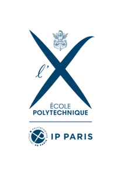
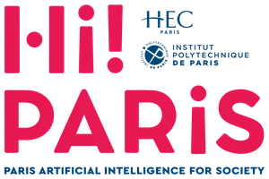
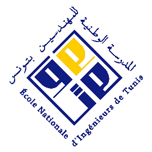
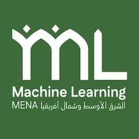
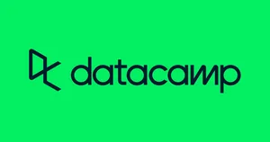

Achievements & Highlights
$ ./list_highlights --verified
Scholarship of Excellence
Awarded by the Tunisian Government
20+ Verified IBM Certifications
Earned & verified on edX
Google MENA ML 2026 — Jeddah
Full scholarship · organized by Google DeepMind
5× School Ambassador
National competitive programming & AI competitions
Paper Accepted @ EUSIPCO 2026
Europeanizing Modular Zero-Shot TTS
C1 — English & French
Plus certifications across Coursera, DataCamp & edX
// built & recognized at

École Polytechnique
Hi! PARIS
ENIT CEA List
Google MENA ML EUSIPCO 2026
DataCamp Tunisian Gov. École Polytechnique Hi! PARIS ENSTA Paris ENIT CEA List Google MENA ML EUSIPCO 2026 IBM edX Coursera DataCamp Tunisian Gov.